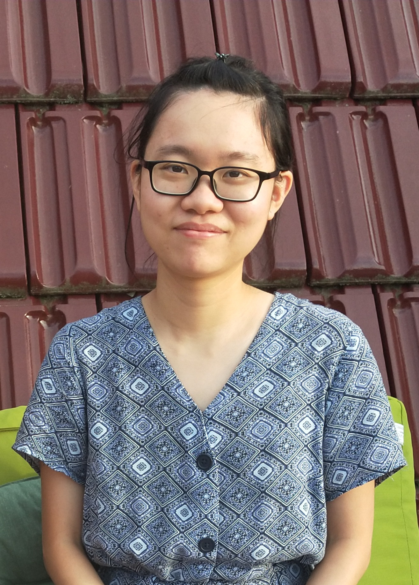
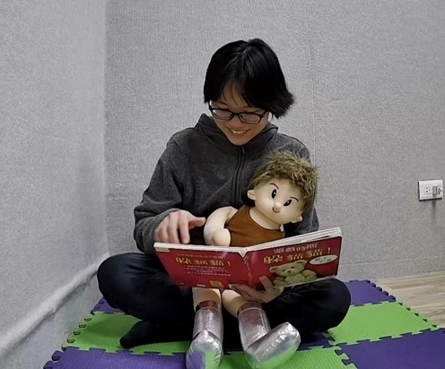

Sia Ming Yean

Sia is my family name and
it's also how I introduce
myself to others.

Pretending to read a picture
book with a "child" to test the
angle of our lab's cameras.
About me
I am currently a post-doctoral researcher at National Taiwan Normal University, working with Prof. Shinmin Wang on projects related to shared book reading and children's brain activation. I did my PhD at the University of Nottingham Malaysia Campus under the supervision of Prof. Julien Mayor, where I examined word learning strategies that children use. After my PhD, I worked as a post-doctoral researcher at the University of Göttingen with Prof. Nivedita Mani on early language acquisition.
From story time to shared book reading
When I was very young, my father told me many stories to keep me entertained. This led to my love for books and reading. Once I started schooling, I began to hunt around the house for story books that I could read. Now, as a working adult with a background in developmental psychology (specialising in language acquisition), I seek to understand the mechanisms behind the benefits of parent-child shared reading. I am also interested in testing the possibility of reducing the academic achievement gap between high and low socioeconomic status (SES) groups through shared reading.